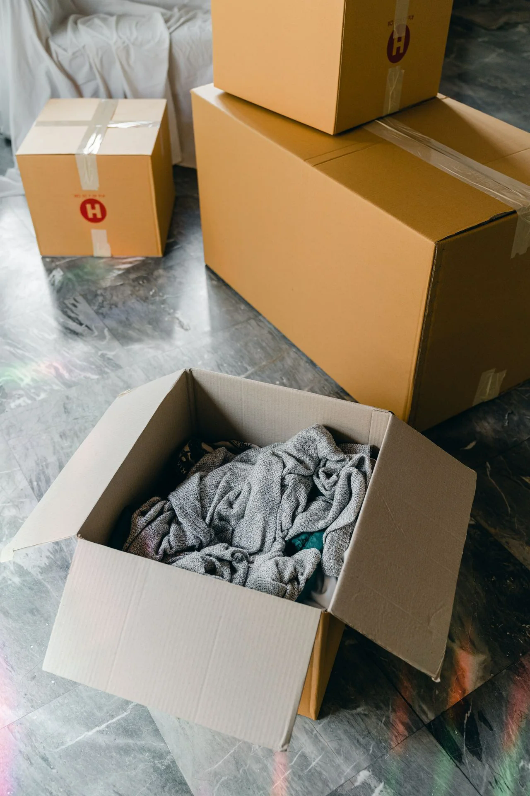
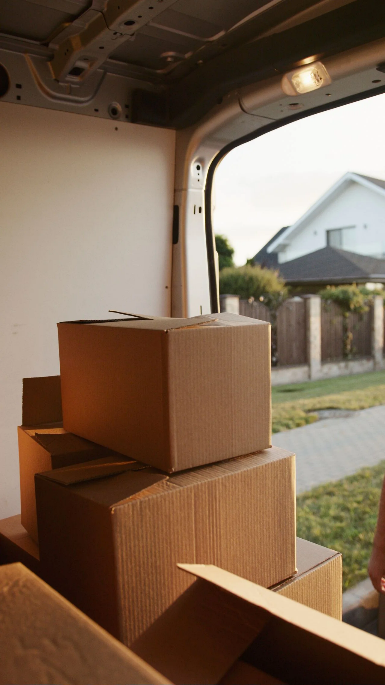
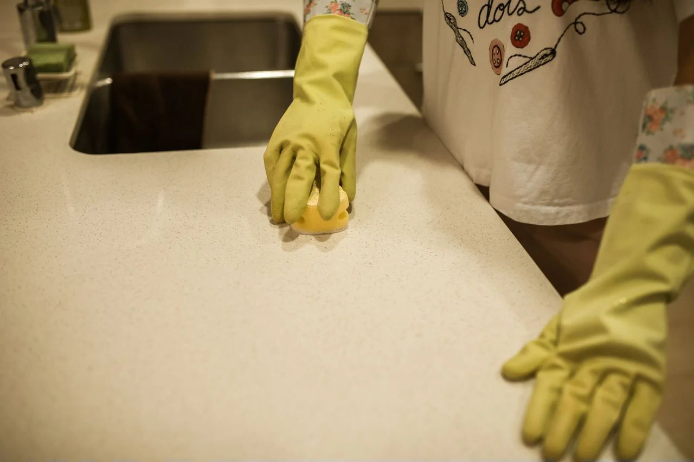

UMZUG & TRANSPORT
Sicher von A nach B
Tragen, Verladen und Transporthilfe beim Umzug Ihrer Wohnung oder Ihres Hauses.

BAYERNWEIT IM EINSATZ
RÄUMPARTNER · RP REINIGUNG

Tragen, Verladen und Transporthilfe beim Umzug Ihrer Wohnung oder Ihres Hauses.

Wohnungsreinigung, Reinigung nach dem Auszug und Endreinigung – Umfang nach Absprache.
Keller, Dachboden oder Garage entrümpeln und Haushalte auflösen – inklusive abgestimmter Entsorgung.
WEITERE LEISTUNGEN

Glasflächen, Rahmen und Fensterbänke nach Absprache.
Fensterreinigung ansehen →
Laub sammeln, Unkraut entfernen und Gartenwege aufräumen.
Gartenpflege ansehen →Echte Fotografien von Pexels als Beispielbilder. Die abgebildeten Personen und Aufträge gehören nicht zu RäumPartner.
Ob sauberer Wohnraum, ein anstehender Umzug oder Hilfe im Garten: Entdecken Sie die passende Leistung.
Beispielfotos von Pexels – keine eigenen Kundenaufträge.
RÄUMPARTNER · BAYERN
RäumPartner unterstützt Privat- und Gewerbekunden in ganz Bayern. Nennen Sie uns den Einsatzort und die gewünschte Leistung: Anfahrt, Termin und mögliche Zusatzkosten stimmen wir vor Ihrer Beauftragung mit Ihnen ab.
Wir helfen bei der Reinigung von Wohnungen und Fenstern, bei Umzügen, einfacher Gartenpflege, Entrümpelungen und Haushaltsauflösungen.
Einsatzgebiet und Anfahrt ansehen →